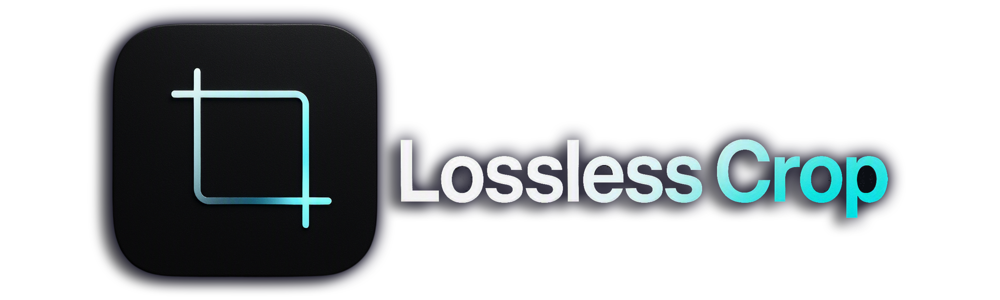
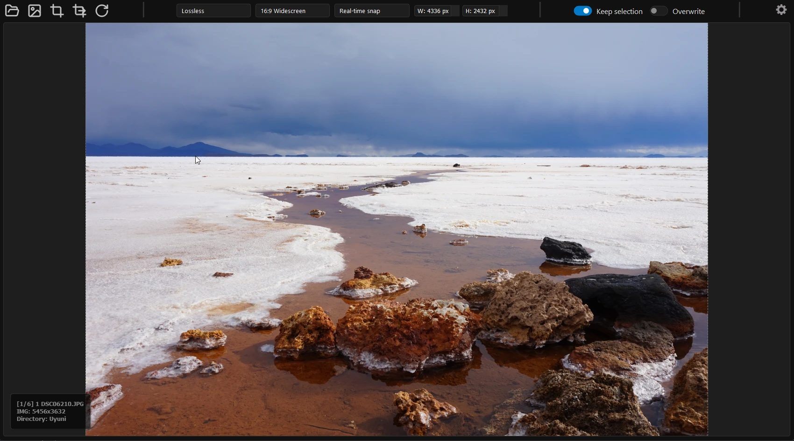

A lightning-fast standalone utility designed for efficient keyboard workflows, precision boundary selections, and zero-compromise metadata preservation.

| Feature Highlight | Lossless Crop |
|---|---|
| True Lossless Quality Perfect canvas dimensions with absolutely zero pixel compression. | ✓ |
| Fast Keyboard-Driven Workflow Draw a box, hit Spacebar, and move instantly to your next image file. | ✓ |
| Preserve Image Metadata Retain original EXIF, GPS, and camera sensor information intact. | ✓ |
| Smart Window Management Remembers your custom application window size and coordinates automatically. | ✓ |
| Zero-Installation Portable Binary No bloated dependencies, installer screens, or background background telemetry. | ✓ |
Designed for speed. Draw your boundary box, hit the Spacebar to instantly crop, and your canvas resets for the next file automatically.
Perform pixel-perfect transformations. Crops image dimensions flawlessly while preserving 100% of your native metadata and file structure.
Ships as pre-compiled standalone binaries. No installations, setup scripts, or bloated background dependencies required.